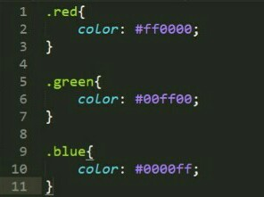

Different devices have different screen resolution, example mobile phone, tablet, PC and other. If website no update, cannot show normal layout on small screen resolution mobile phone or tablet, but viewport can solve. Viewport will make website normal show on different screen resolution.
Different telecom operator, their internet speed different. Internet speed will affect download times.Fast speed internet can quick download complete about small capacity file, about big file can quick download complete and make sure file completely. Slow speed internet for download times for small capacity file will be delay, for big capacity file may directly disconnect, even already downloaded file cause part of file loss.
Nowadays, have more browsers, function are largely identical but with minor differences. The main features are make a request to server, show data to the user. Common capabilities have search bar, menu bar, back button, forward button, refresh button, bookmarks and other.
HTML stands for HyperText Markup Language. Developer use HTML element to make browser display document according to HTML tag. Inside HTML5 have HTML, CSS and Javascript, make developer work efficiently, faster and complete project early.
If HTML update new tags, browser cannot update in time, so need wait the patch file or update the browser. HTML cannot auto update information from server, when data of HTML have changes, bring about must manuals operation update. HTML5 need waste more time to prepare mobile app, and will make mobile app's code complication.
Nowadays, is the era of science and technology. The most of people will have a mobile phone or a laptop, even has electronic equipment in living, for example television, projector and other. All device or electronic equipment have screen for display, inside of screen is use pixel to display pictures, video, text and other image. Pixel is point or square compose, 1 and 0 to display image when amplification pixel. Pixel have three color, red, green, blue (RGB) to make up beautiful image. Pixel have resolution, resolution of pixel the higher the better, make user can suitable for view image and make image closer to the real.
Graphics file formats have many type, for example .jpg, .png, .gif. Advantages of graphics file formats of jpg format is common use on World Wide Web to save and transfer pictures. Color of pictures of jpg format is bright. Another format is png, compression of png is lossless data compression, format of png have 8-bit, 24-bit and 32-bit, 8-bit (256 index color) support index transparent and alpha transparent, 32-bit have 256 level transparency. Png format support save name of author, name of picture, copyright, the creation time and other information. Png format suitable for use in icon, because background of png support transparent. In term of anti-aliasing, png will better than jpg format and gif format. The last format is gif format, gif format common use on website animation, like children stories, will let child enjoy reading. Gif format support single transparent color and 256 color type (the general called 8-bit color).
Disadvantages of graphics file formats of jpg format is its compression way, compression is use lossy compression, after more times upload and download, quality of picture will distortion.
In the era of the common internet in the most family, on internet have more websites, like blog, YouTube and other social websites for people sharing their creative. YouTube have more interesting video, someone will like favourite, so have some software is involving copyright to download video. Some teenagers like to change other people websites, this also violate intellectual property right. Some artist will use websites to increase popularity, someone will without permission is forwarded to other social websites, also a issues involving copyright.
Due of the screen resolution of the mobile phone or tablet different with computer, when user browse website, design and content of website will become very narrow and crowded, but can use 'viewport' to solve. 'Viewport' could say it's designed for the mobile browser. Add 'viewport' in website, website can show comfortable on different screen resolution of device, when user browse website.
HTML stands for Hypertext Markup Language. Html is skeleton of a website, display and save documents by entering HTML element. CSS stands for Cascading Style Sheets. This is used to beautify and layout HTML, websites have CSS to beautify that allow users to exoerience more beautiful and comfortable webpages. Javascript is a programming language. Sometimes, will see some message pop-up from webiste that is using by entering javascript. Javascript can combined HTML and CSS to create game, develop mobile app and other.
CSS Colors have three type of representation, one of the representation is hex code, hex code is using hexadecimal to representation. In hexadecimal, 1-9 use number to show, after 9 use A-F to show 10-15. In CSS Colors, need add "#" put in front of hex code, example #000000 is black color. The hex code can be converted to hex code using RGB values.
